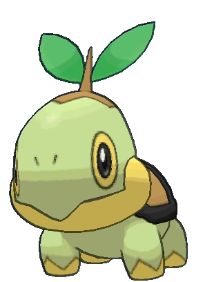
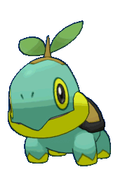
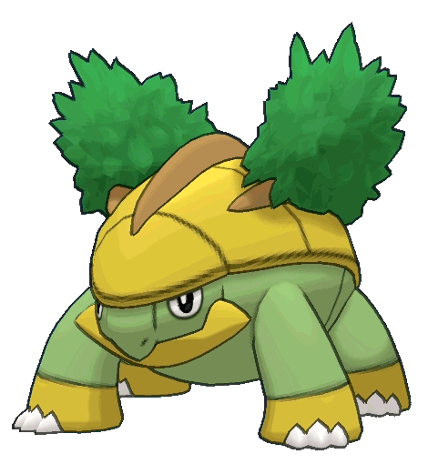
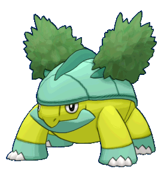
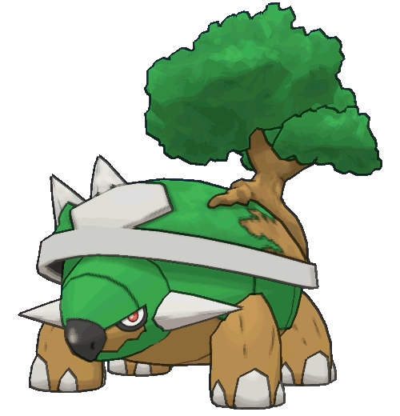
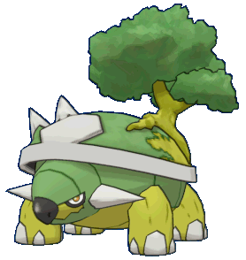

Turtwig (ナエトル Naetle en japonés) es un Pokémon de tipo Planta introducido en la cuarta generación. Es uno de los tres Pokémon iniciales que pueden elegir los entrenadores que empiezan su aventura en la región de Sinnoh, junto a Chimchar y Piplup


Grotle (ハヤシガメ Hayashigame en japonés) es un Pokémon de tipo Planta, que evoluciona de un Turtwig al alcanzar el nivel 18


Torterra (ドダイトス Dodaitose en japonés) es un Pokémon de tipo Planta y tipo Tierra, evolucionado de un Grotle al alcanzar el nivel 32

